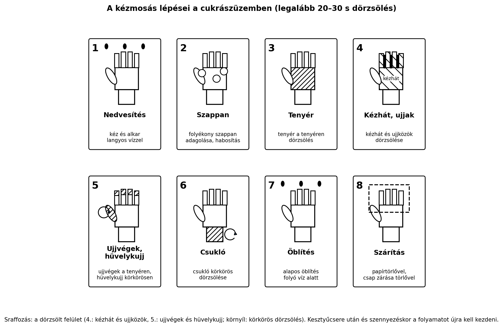
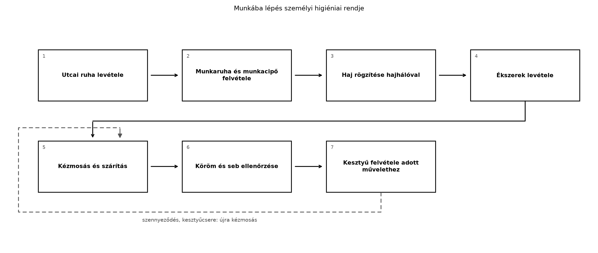

A személyi higiénia a cukrászüzemben az élelmiszerbiztonság első, személyes védővonala. Míg az üzem kialakítása (A vendéglátó üzlet és a cukrászüzem kialakításának higiéniai feltételei) a falakat, a padlót, a gépeket és a vízvételi pontokat rendezi, a személyi higiénia azt szabályozza, hogy a dolgozó maga ne váljon szennyező forrássá. Egyetlen rosszul kezelt kéz, egy gennyes seb vagy egy hajfonat elég ahhoz, hogy egy teljes krémtétel, torta vagy fagylaltadag fogyasztásra alkalmatlanná váljon.
Ebben az alfejezetben a kézmosást, a munkaruha-használatot, az egészségügyi alkalmasságot és a betegségek, sérülések bejelentését tanulod meg. A tanult munkába állási rendet minden későbbi gyakorlati útmutatóban használjuk, különösen a Takarítás, fertőtlenítés, mosogatás és hulladékkezelés alfejezettől kezdve.
Szemléletes kép. Képzeld el, hogy reggel belépsz a cukrászüzemben. Az asztalok tiszták, a hűtő hőmérséklete rendben, a tészta előkészítve. Te azonban az utcáról érkezel: használtad a kapaszkodót a villamoson, megfogtad a kilincset, átvetted a nyersanyagot a szállítótól. A kezeden több ezer, láthatatlan mikroba lehet. Ha úgy nyúlsz a tejszínes krémhez, mintha az asztalod már önmagában is tiszta lenne, a terméket szennyezed. A személyi higiénia célja, hogy ezt a „behurcolt” kockázatot a lehető legkisebbre csökkentsd.
Definíció. A személyi higiénia az élelmiszerrel dolgozó személy testi tisztaságának, ruházatának, egészségi állapotának és viselkedésének azon együttese, amely megakadályozza, hogy a dolgozó kórokozót, szennyező anyagot vagy idegen testet vigyen az élelmiszerbe.
Higiénia. Az élelmiszer-higiéniai uniós rendelet (852/2004/EK) szerint az élelmiszerrel foglalkozó személyzetnek magas fokú személyi tisztaságot kell fenntartania, megfelelő, tiszta, és – ahol szükséges – védőruházatot kell viselnie. A vendéglátó üzem belső szabályzata és a NÉBIH által ajánlott jó higiéniai gyakorlat útmutató ezt részletezi (ellenőrizendő: aktuális NÉBIH GHP útmutató).
Jogszabály. Az élelmiszerrel foglalkozó dolgozóra a magyar élelmiszerlánc-törvény (2008. évi XLVI. törvény) és annak végrehajtási rendeletei egészségügyi alkalmassági követelményeket állapítanak meg. Az élelmiszerrel foglalkozó dolgozó munkaköri egészségügyi alkalmasságát foglalkozás-egészségügyi vizsgálat igazolja; a dolgozó egészségügyi nyilatkozatot tesz, és köteles jelenteni a fertőzésre utaló tüneteket. Ugyanezt a rendet tárgyalja részletesebben a A vendéglátás különleges szabályai, ételmérgezés bejelentése, kártevőirtás és hatósági ellenőrzés alfejezet is (ellenőrizendő: hatályos jogszabály – munkaköri alkalmassági és járványügyi rendeletek –, a vizsgálat és a nyilatkozat gyakorisága, az egészségügyi könyv hatályos szerepe). A munkáltató feladata annak igazolása, hogy a dolgozó munkaköre egészségügyi szempontból ellátható; a dolgozó pedig köteles tájékoztatni a munkáltatót, ha állapotában olyan változás áll be, amely az élelmiszerbiztonságot veszélyeztetheti.
Szabály. Élelmiszerrel nem dolgozhat, aki:
A pontos betegséglistát és a kizárási feltételeket az aktuális közegészségügyi rendelet tartalmazza (ellenőrizendő: hatályos rendelet). A tanuló gyakorlatban minden egészségügyi panasznál a gyakorlati oktatóját vagy a műszakvezetőjét kérdezze meg.
Példa. Egy cukrász reggel úgy érzi, a gyomra „rossz”, és egyszer hányt is. A hatályos előírás szerint ilyenkor nem állhat be a tejszínhab-készítéshez, mert a hányás és a hasmenés okaként gyakori norovírus vagy más élelmiszer útján terjedő kórokozó a kezén, a ruháján, a levegőben is jelen lehet. Jelenti a felettesének, aki hazaküldi; a dolgozó az üzemben semmilyen munkát nem végez, a használt WC-t és kilincseket fertőtlenítik. Élelmiszerrel csak a tünetek megszűnése után legalább 48 órával dolgozhat újra, szükség esetén orvosi igazolással (ellenőrizendő: hatályos közegészségügyi előírás, NÉBIH-útmutató).
A kéz a cukrász legfontosabb „szerszáma”. Ugyanakkor a kézen található mikroorganizmusok szennyezhetik az élelmiszert. A fertőtlenítő kézmosó zselé csak megfelelő szappanos kézmosás után hatékony; önmagában nem helyettesíti azt.
Szabály. Kézmosás kötelező:
Figyelem. A kesztyű nem páncél. A kesztyű viselése nem helyettesíti a kézmosást, csak kiegészíti azt. Ha a kesztyű elszakad vagy szennyeződik, le kell venni, a kezet újra meg kell mosni, és tiszta kesztyűt kell felvenni. Az eldobható kesztyűt szennyezett felülettel, pénzzel, kilinccsel, arccal érinteni tilos, mert azonnal átvihető a szennyeződés az élelmiszerre. A kesztyűt gyakran kell cserélni, különösen a készre sütött, hőkezelés nélküli termékek (pl. tejszínhabos díszítés) esetén.
A kesztyűt úgy kell levenni, hogy a szennyezett külső felülete ne érjen a bőrhöz: az egyiket kívülről fogva, kifordítva húzzuk le, a másikat a csupasz ujjal belülről, a csukló belső oldalán fogjuk meg, és az elsőre fordítva vesszük le; utána kezet mosunk.
Eljárás. Kézmosás menete cukrászüzemben.

A képsor a technológiai lap dörzsölési lépéseit mutatja: a sraffozás a 3. képen a tenyeret, a 4.-en a kézhátat és az ujjközöket, az 5.-en az ujjvégeket és a hüvelykujjat, a 6.-on a csuklót jelöli; a környíl a körkörös dörzsölést jelzi.
A munkaruha nem divat, hanem gát. Védi a terméket a dolgozó utcai ruháján lévő portól, szálaktól, hajszáltól, ugyanakkor védi a dolgozót a forró cukortól, a lisztportól és a tisztítószerektől.
Szabály. A cukrászüzemben:
Az alábbi rajz a helyes és a helytelen megjelenést veti össze (a köröm-, ékszer- és sebszabályokat a következő szakasz részletezi).
Egy cukrász számára ajánlott munkaruha- és védőeszköz-készlet:
| Felszerelés | Célja | Tisztítási, cseregyakorlat |
|---|---|---|
| Hajháló vagy sapka | hajszálak visszatartása | naponta cserélni, mosni |
| Munkaköpeny | a test és az utcai ruha fedése | naponta, szennyezés esetén azonnal cserélni |
| Vízlepergető vagy pamut kötény | a test elülső felületének védelme | naponta mosni |
| Zárt orrú munkacipő | lábvédelem, csúszásgátlás | csak üzemben használni, rendszeresen tisztítani |
| Égésvédő kesztyű és kötény (forró cukor) | égés elleni védelem | sérülés után azonnal cserélni |
| Fémkesztyű vagy vágásvédő kesztyű (késes szeletelés) | vágásvédelem | használat után ellenőrizni |
| Porvédő maszk (liszt, porcukor adagolásakor) | belélegzés elleni védelem | eldobható, nedvességtől óvni |
Higiénia. A munkaruhát a szennyezett anyagokkal való érintkezés után azonnal le kell cserélni. A hűtőkamrába, mosogatótérbe vagy az élelmiszeres tárolóhelyiségbe általában a napi munkaköpenyben megy a dolgozó; a karbantartók számára külön tiszta védőruhát kell biztosítani.
Szabály. Az üzemben, a termelés során:
Példa. Egy tanuló éles késsel felvágja a gyümölcsöt, és megvágja a mutatóujját. A sebet alaposan ki kell tisztítani, fertőtleníteni kell, majd vízálló, kék, fémszálas tapasszal kell fedni, és fölé eldobható, élelmiszeripari kesztyűt kell húzni. Ha a seb vérzik, gennyesedik, vagy a tanuló nem tudja megfelelően tisztán tartani, addig nem dolgozhat élelmiszerrel, amíg a sebe be nem gyógyul vagy szakszerűen fedett nem lesz. A balesetet be kell írni a baleseti naplóba és a műszakvezetőnek jelezni.
Szabály. A dolgozó haladéktalanul jelenti a munkáltatónak vagy a műszakvezetőnek:
A jelentés nem a dolgozó szégyene, hanem az élelmiszerbiztonság része. A munkáltató ilyenkor a dolgozót a lehetőségek szerint más, nem élelmiszerrel való munkakörbe helyezi át, vagy hazaküldi. A titoktartás és a személyiségi jogok védelmével együtt a közegészségügyi kockázatot mindig meg kell előzni.
Kritikus pont. A betegség bejelentése azért kritikus, mert a hányással-hasmenéssel járó fertőzések (pl. norovírus) rendkívül alacsony fertőző dózissal, azaz igen kevés vírusrészecskével is terjednek. Egy fertőzött dolgozó a kéz nélküli munka közben a levegőbe is juttathat vírusrészecskéket, amelyek a kész tejszínes desszerteken megtapadhatnak. A hőkezelés nélküli termékeknél ezért a beteg dolgozó kizárása a leghatékonyabb megelőzés.
Szabály. Az üzemi higiéniai utasítás a látogatókra és a külső szerelőkre is vonatkozik.
Valós eset. Egy üzemben a hűtőberendezés meghibásodott. A külső szerelő utcai ruhában, munkacipőben kezdte volna el a javítást a hűtő előtt, ahol nyersanyagok is voltak. A műszakvezető megállította, tiszta védőköpenyt és hajhálót adott neki, a környező tésztatároló edényeket elszállította, a padlóra védőfóliát terített. A javítás után a területet általános takarítással és felületfertőtlenítéssel adta vissza a termelésnek. Ez a gyakorlat azért fontos, mert a karbantartó cipője, szerszámos ládája és ruhája baktériumokat, porrészecskéket, fémforgácsot vihet be a termelőtérbe.
Szabály. A személyi higiénia a viselkedésre is kiterjed:
Definíció. A személyes műszaki higiénia azt jelenti, hogy a dolgozó a termékhez csak tiszta kézzel, tiszta eszközzel, a megengedett munkaruhában, a művelethez szükséges legkisebb érintéssel nyúl.
Cél. A tanuló a munkába lépés előtti személyi higiéniai rendet önállóan, a sorrend betartásával elvégzi, és felismeri a nem megfelelő állapotot.
Eszközök. Munkaruha (köpeny, hajháló, tiszta cipő), folyékony szappan, papírtörlő, eldobható kesztyű, kék fémszálas tapasz, tükör, hulladékgyűjtő.
Higiéniai munkakezdés.

Ellenőrzési pontok.
Tipikus hibák és okaik.
| Hiba | Tünet | Ok | Megelőzés, javítás |
|---|---|---|---|
| Kézmosás elmarad | A krémen, tésztán kéznyom, elkenődés látszik | A dolgozó a munkába lépéskor csak kesztyűt húz | A munkába lépési rendet minden műszakban ellenőrizni; a kesztyű nem pótolja a kézmosást |
| Gyűrű viselése | A gyűrű alatt bőrpír, vagy a krémbe fémdarab kerül | A dolgozó elfelejti levenni az ékszert | A műszakkezdés előtt ékszertároló dobozt kijelölni; a munkakezdő ellenőrzést a műszakvezető végzi |
| Vérző, fedetlen seb | A terméken vérfolt, a dolgozó fájdalmat jelez | A seb fedése elmaradt, vagy a tapasz átázott | A sebet azonnal tisztítani, fertőtleníteni, kék fémszálas tapasszal fedni, fölé kesztyűt húzni; ha nem tartható tisztán, a dolgozó ne érintkezzen élelmiszerrel |
| Utcai cipőben a termelőtérben | A padlón sár, a hűtő előtti terület szennyezett | A dolgozó az öltözőben nem cserélt cipőt | A termelőtér bejáratánál cipőváltót jelölni; a műszakkezdő ellenőrzés része |
Önellenőrzés – válaszok
1. feladat (A)
Írd le a munkába lépés higiéniai rendjét a te munkáddal (pl.
piskótatészta készítése) előtt! Legalább 8 lépést sorolj fel.
2. feladat (A)
Igaz vagy hamis? Indokold minden választ!
a) A gyűrűt viselhetem, ha élelmiszeripari szilikonból van.
b) A rövid köröm elegendő, a körömlakk a tiszta kézről árulkodik.
c) A hasmenést a dolgozónak nem kell jelentenie, ha nem érzi magát
lázasnak.
3. feladat (B)
Készíts táblázatot: bal oldalra a munkaruha elemét írd, jobb oldalra
azt, hogy milyen szennyezést akadályoz meg! Legalább 5 sort tölts
ki.
4. feladat (B)
Egy cukrász a tejszínhab készítése közben megvágja az ujját. Írd le a
teljes eljárást a seb ellátásától a munkába való visszatérésig, ügyelve
a személyi higiénia és az élelmiszerbiztonság szabályaira!
5. feladat (C)
A műszakvezető észreveszi, hogy a tanuló az utcai öltözékben, gyűrűvel,
hosszú hajjal közelít a krémfőző géphez. Milyen kockázatokat hordoz ez a
helyzet? Írd le legalább három különböző típusú veszélyt, és a megoldást
a műszakvezető részéről!
6. feladat (D)
Sajátítsd el a kézmosási technikát otthon, tükör előtt gyakorolva. Kérd
meg egy családtagodat, hogy figyelje: minden lépést betartasz-e? Töltsél
ki egy egyszerű ellenőrző lapot: igen/nem válaszokkal, és legalább
egyszer szándékosan kihagysz egy lépést (pl. a hüvelykujj dörzsölését),
hogy jobban emlékezz rá. Írd le, mit tapasztaltál, és miben kell
fejlődnöd.
1. feladat megoldása
A munkába lépés rendje például: 1) utcai ruha és cipő lecserélése a
munkaruhára; 2) hajháló felvétele, haj eltűnése; 3) ékszerek, óra
levétele; 4) kötény felvétele; 5) kézmosás 20–30 másodpercig szappannal;
6) szárítás papírtörlővel; 7) a kéz és a köröm ellenőrzése; 8) szükség
esetén tiszta kesztyű felvétele; 9) a munkaterület tisztaságának
ellenőrzése; 10) a mért nyersanyagok ellenőrzése.
2. feladat megoldása
a) Hamis. Élelmiszerrel való munkavégzés közben gyűrűt viselni tilos. A
gyűrű alatt nedvesség, szennyeződés és mikroba maradhat, a gyűrű idegen
test lehet a termékben.
b) Hamis. A körömlakk letöredezhet, szennyezheti a masszát, ezért nem
kívánatos. A rövid, tiszta köröm alapkövetelmény.
c) Hamis. A hasmenést minden esetben jelenteni kell, mert fertőző
kórokozó tünete lehet, akkor is, ha a dolgozó nem lázas. A hasmenés a
betegséget terjesztő, élelmiszerrel érintkező dolgozó esetén kizáró
ok.
3. feladat megoldása
| Munka- vagy védőruha elem | Milyen szennyezést akadályoz | |—|—| |
Hajháló | hajszálak, hajas fejbőr részecskék | | Munkaköpeny | utcai
ruháról származó por, szálak, szennyeződés | | Vízlepergető kötény |
élelmiszerrel érintkező oldal szennyezése, nedvesség | | Zárt orrú
munkacipő | lábról, utcai cipőről származó szennyezés, balesetek | |
Égésvédő kesztyű/kötény | forró cukor vagy zsiradék égési sérülés | |
Porvédő maszk | porcukor, liszt belélegzése | | Kék fémszálas tapasz | a
sebből származó vér, genny, kórokozó |
4. feladat megoldása
A dolgozó először azonnal abbahagyja a munkát, és elmegy a kézmosóhoz. A
sebet folyó vízzel leöblíti, a vért kimossa. A környéket fertőtleníti. A
sebet steril gézlappal szárazra itatja, majd vízálló, kék színű,
fémszálas tapasszal fedi. Felvesz egy tiszta, eldobható kesztyűt, és
jelenti a műszakvezetőnek. A munkát csak akkor folytatja, ha a vérzés
elállt, a tapasz biztosan tart, és a művelethez megfelelő érzékenységű a
keze. Ha a seb tovább vérzik, vagy fájdalmas, nem dolgozhat közvetlenül
élelmiszerrel, amíg a seb be nem gyógyul. A balesetet a baleseti naplóba
is be kell jegyezni (ellenőrizendő: munkahelyi baleseti nyilvántartás
rendje).
5. feladat megoldása
Kockázatok:
1. Utcai ruha: por, szálak, pihe kerülhetnek a krémbe.
2. Gyűrű: a gyűrű alatt mikroba maradhat; a gyűrű a krémbe eshet, idegen
testet okoz.
3. Hosszú haj: hajlamos a hajszálak kihullására; a krémbe, a tésztába
kerülhetnek.
A műszakvezető megoldása: a tanulót nem engedi a termelőtérbe,
visszaküldi az öltözőbe. A hajhálót, a munkaruhát és a munkacipőt
felvéteti, az ékszert leveteti, a kézmosást ellenőrzi. A munkakezdést
csak ezek után engedélyezi. A szabályszegést a napi higiéniai ellenőrző
lapon dokumentálja, és szükség esetén oktatást tart a munkába lépés
rendjéről.
6. feladat megoldása
A feladat önálló gyakorlást igényel. A tanuló által írt tapasztalat
legalább 5 mondatból álljon: milyen lépést hagyott ki, miért volt nehéz
betartani, milyen javítási módot talált, milyen gyakran fogja a
műszakban megismételni, és miért fontos a hüvelykujj dörzsölése. Az
ellenőrző lapon legalább 8 igen/nem kérdés szerepeljen a kézmosási
lépésekről.
A személyi higiénia célja, hogy a dolgozó ne szennyezze az élelmiszert. Az élelmiszerrel foglalkozó dolgozónak egészségügyileg alkalmasnak kell lennie, és minden munkába lépés előtt el kell végeznie a személyi higiéniai rendet: munkaruha, hajháló, tiszta cipő, ékszerek levétele, rövid köröm, sebek fedése kék, fémszálas tapasszal, majd alapos kézmosás. A kézmosás langyos vízzel, folyékony szappannal, legalább 20–30 másodpercig tart, és kiterjed a kézfejre, a kézhátra, az ujjközökre, az ujjvégekre, a hüvelykujjra és a csuklóra. A kesztyű nem helyettesíti a kézmosást. Betegség, hasmenés, hányás, láz vagy gennyes seb esetén a dolgozó nem dolgozhat élelmiszerrel; ezt jelentenie kell. A látogatók és a karbantartók csak tiszta védőruhában, hajhálóval, a termelőtérre vonatkozó szabályok szerint léphetnek be. Továbbvitt eredmény. Ez a személyi higiéniai rend minden későbbi gyakorlati útmutatóban a „higiéniai munkakezdés” alapja, különösen a Takarítás, fertőtlenítés, mosogatás és hulladékkezelés alfejezettől kezdve, ahol a termelőtér és az eszközök tisztaságának ellenőrzése is ehhez a rendhez kapcsolódik.
Forráskiindulópontok: 852/2004/EK rendelet (élelmiszer-higiénia), 2008. évi XLVI. törvény (élelmiszerlánc), NÉBIH jó higiéniai gyakorlat útmutató. Ellenőrizendő: az egészségügyi alkalmassági vizsgálatok aktuális magyar rendeleti háttere és az „egészségügyi kiskönyv” megszűnése utáni gyakorlat, a kézmosási idő és a kézszárítás üzemen belüli konkrét követelménye, a fémszálas tapasz és a fémdetektoros ellenőrzés üzemi előírása. Az itt szereplő egészségügyi kizáró okok és a kézmosás lépései tanulási célúak, nem jogszabályi idézet.